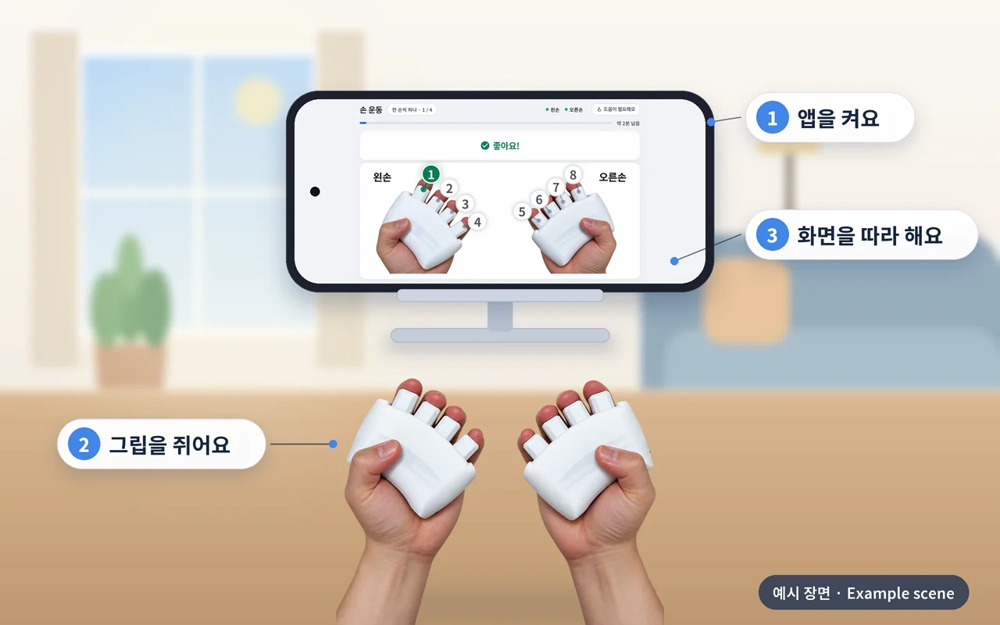

집에서 스마트폰으로 즐기는
Rehaptic, 준비하고 있습니다
어르신과 가족이 집에서 손과 머리를 함께 움직이는 활동을 즐길 수 있도록, 스마트폰 앱과 그립을 준비하고 있습니다.
2028년 이후 출시 예정

서비스 형태 요약
- 1
누가 쓰나요
어르신과 가족
집에서 스마트폰 하나로 시작합니다
- 2
무엇으로 하나요
그립 + 스마트폰 앱
태블릿과 관리자 웹 없이 꼭 필요한 것만 담았습니다
- 3
어떻게 이용하나요
집에서 스스로 즐깁니다
화면 · 소리 · 진동이 알려 주는 대로 따라 합니다
그림은 이해를 돕기 위한 개념 예시입니다. 스마트폰 화면은 폰에 맞게 짠 화면 구성 예시이며, 실제 가정용 앱과 다를 수 있습니다.
집에서는 이렇게 즐겨요
스마트폰 앱을 켜고 그립을 쥔 뒤, 화면이 알려 주는 대로 손과 머리를 함께 움직입니다.

장면은 이해를 돕기 위해 그린 예시입니다. 스마트폰 화면은 개발 중인 센터용 앱의 구성을 폰 화면에 맞게 다시 짠 화면 구성 예시(개념)이며, 실제 가정용 앱과 다를 수 있습니다. 제품 사양과 일정은 바뀔 수 있습니다.
앱을 켜요
내 스마트폰에서 앱을 엽니다.
그립을 쥐어요
왼손·오른손 그립을 양손에 쥡니다.
화면을 따라 해요
화면·소리·진동이 알려 주는 대로 누릅니다.
콘텐츠는 센터용과 같습니다
집에서도 같은 콘텐츠를 같은 방식으로 측정해 즐길 수 있도록 준비하고 있습니다. 콘텐츠의 자세한 설명과 화면은 제품 소개 한곳에 모아 두었습니다.
- 손 운동
- 리듬 놀이
- 숫자 따라 누르기
- 두더지 잡기
- 주먹으로 피하기
- 센서 게임 · 새 그립으로 준비 중
- 손가락 악력 훈련 · 새 그립으로 준비 중
효능이나 치료 효과를 말하지 않습니다. 콘텐츠 구성과 일정은 바뀔 수 있습니다.
센터용과 이렇게 달라요
| 구분 | 센터용 | 가정용 |
|---|---|---|
| 쓰는 분 | 프로그램 담당자와 어르신 | 어르신과 가족 |
| 구성 | 햅틱 그립 + 태블릿 앱 + 관리자 웹 | 햅틱 그립 + 스마트폰 앱 |
| 콘텐츠 · 측정 | 모두 같음 | 모두 같음 |
| 이용 방식 | 담당자가 프로그램을 진행하고, 기록은 관리자 웹에서 관리합니다 | 집에서 스마트폰 앱으로 스스로 즐깁니다 |
| 이렇게 나눈 까닭 | 담당자가 여러 분의 기록을 한곳에서 관리해, 더 꼼꼼한 서비스를 하도록 | 태블릿과 관리자 웹 없이 꼭 필요한 것만 담아, 부담 없이 시작하도록 |
| 상태 | 2027년 상반기 출시 예정 | 2028년 이후 출시 예정 |
태블릿으로 하느냐 스마트폰으로 하느냐에 따라 화면 구성(UI)만 다르고, 콘텐츠와 측정 구성은 센터용과 같습니다.
준비하고 있는 것
모바일 앱
집에서 손과 머리를 함께 움직이는 활동을 즐기는 앱입니다.
센서를 담은 새 그립
자이로 센서를 담아 그립을 쥐고 움직이며 게임을 조작하는 그립입니다.
게임과 손가락 악력 훈련
게임을 즐기며 손가락으로 쥐는 훈련을 함께 하는 활동입니다.
모두 준비 중인 계획이며 일정과 구성은 바뀔 수 있습니다. 효능이나 치료 효과를 말하지 않습니다.